<!DOCTYPE html>
<html lang="ja">
<head>
  <title>『ZenHub x GitHub』を軸としたアジャイルプロセスの作り方</title>
</head>
<body>
<h2 id="-">はじめに</h2>
  <p>チーム開発でプロジェクトを始める際『プロジェクト管理ツール』を何にするかは一番はじめに悩む点の一つです。</p>
  <p>今回は、アジャイルプロセスに親和性のあるプロジェクト管理ツール「ZenHub」を題材に、GitHubとZenHubの組み合わせることで、開発プロセスをどのように作り、改善していくかについて、紹介したいと思います。</p>

<h2 id="-">対象読者</h2>
  <ul>
    <li>プロジェクト管理ツールの『選定』に興味がある方</li>
    <li>GitHub,ZenHubを利用している方</li>
    <li>ZenHub以外のプロジェクト管理ツールを利用している方</li>
    <li>ホワイト ボードを使ったプロジェクト管理している方</li>
  </ul>

<h2 id="zenhub-">ZenHubとは</h2>
  <p>ZenHubとは、GitHub Issueをチケットとしてカンバン方式で進捗を管理できるプロジェクト管理ツールです。<br>
  ZenHubの公式サイトにある『<a href="https://help.zenhub.com/support/solutions/articles/43000010778-what-is-zenhub-an-intro-to-zenhub-in-github">What is ZenHub？</a>』には、下のように述べられています。</p>
    <blockquote>
    <p>ZenHub is not your typical GitHub Issue tracker. For one, every feature is crafted specifically for fast-moving software teams. Rather than forcing teams to leave GitHub and jump into another tool (resulting in double work, informational silos, and missed updates), it transforms GitHub into a fully featured project management platform.
    Wasted time spent context switching is eliminated. And because everything is fuelled by your GitHub Issues and Pull Requests, you&#39;re always working from the most up-to-date data possible. It&#39;s the fullest possible integration where you already work.
    </p>
    </blockquote>
  <p>つまり、ZenHubはGitHub Issueを追跡するだけのものではなく、GitHub IssueおよびPull Requestsを軸として、別のツールへの切り替えや二重更新などの『ムダ』から解放され、すべてが高速になるようなプロジェクト管理プラットフォームです。</p>

  <p>ZenHubのプロダクトは、<a href="https://www.zenhub.com/about-us>">ZenHub Team</a>が運営しているプロダクトです。<br>
    利用するにあたっての料金ですが、複数のアカウント体系が用意されています。<br>
    詳しくは、公式サイトの<a href="https://www.zenhub.com/pricing">Pricing</a>をご覧いただきたいのですが、要約すると以下のようになっています。</p>
    <table class="tbl">
    <caption>ZenHub 料金体系</caption>
    <tr>
    	<th>体系</th><th>料金(月)</th><th>制約</th>
    </tr>
    <tr>
    	<td>Free</td><td>$0 user/month</td><td>Publicリポジトリのみ</td>
    </tr>
    <tr>
    	<td>Business</td><td>$5 user/month</td><td>-</td>
    </tr>
    <tr>
      <td>Enterprise</td><td>$12.50 user/month</td><td>10人以上利用可能</td>
    </tr>
    </table>
  <br>
  <p><b>他プロジェクト管理ツールとの比較と選定ポイント</b><br>
  <p>また、アジャイルプロセスを作っていく上で親和性がある他のプロジェクト管理ツールとしては、<a href="https://ja.atlassian.com/">Atlassian</a>製の<a href="https://ja.atlassian.com/software/jira">JIRA</a>と<a href="https://ja.atlassian.com/software/trello">Trello</a>があります。<br>
    これらの中でZenHubを選定した理由は、『チケット管理』と『リポジトリ管理』の親和性がポイントでした。<br>
  </p>
  <p>
    例えば、リポジトリ管理にAtlassianの<a href="https://ja.atlassian.com/software/bitbucket">BitBucket</a>を利用しているならば、JIRAやTelloのほうが親和性が高いですし、様々な連携からアジャイルプロセスを作りやすいです。<br>
    一方、GitHubを使っているのであれば、ZenHubを使うことをおすすめします。特にチケット(GitHub Issue)からリポジトリに対するコミット履歴やPull Requestが確認できたり、チケットとリポジトリで相互リンクの関係を作れていたりとてもアジャイルプロセスが作りやすいです。また後述しますが、ZenHubはレポート機能が豊富になりプロセス分析がとてもスムーズにできることも良い点の1つです。<br>
    公式サイトにもJIRAとの比較がありますのでご覧ください。<br>
    <a href="https://www.zenhub.com/jira-alternative">Looking for the JIRA alternative?<a>
  </p>

  <p>より良くプロジェクト管理ツールをチーム導入するには、ツールの『文化・概念』を組織文化として取り入れることが重要です。
  ただ単にチームのプロジェクト管理ツールといった手段として導入するのではなく、概念・思想を理解した上で導入を進めるとチームへの貢献度が高まります。</p>

  <p><b>Getting Started</b></p>
  <p>GitHubを利用しているかつZenHubのアカウントを作成済みであれば、いつでも簡単に使うことができます。
  利用方法としては2種類あります。</p>
  <ul>
    <li>ブラウザ拡張子を追加してGitHub上で操作する。<a href="https://chrome.google.com/webstore/detail/zenhub-for-github/ogcgkffhplmphkaahpmffcafajaocjbd">こちらから(Chrome版)</a></li>
    <li>ZenHub Webアプリを利用して操作する。<a href="https://app.zenhub.com/select-organization">こちらから</a></li>
  </ul>

  また、基本的なUIなどの見方などは公式サイトにある以下の記事をご覧ください。
  <ul>
    <li><a href="https://help.zenhub.com/support/solutions/articles/43000031098-get-to-know-board-features-and-functionality">Get to know Board features and functionality</a></li>
   <li><a href="https://help.zenhub.com/support/solutions/articles/43000010337-take-a-tour-of-zenhub-s-key-features">Take a tour of ZenHub's key features</a></li>
  </ul>


<h2 id="agile-concepts-in-github-and-zenhub">GitHub×ZenHubでアジャイルプロセスを最適化する</h2>
  <p>ZenHubにおけるアジャイルの概念を述べていきます。
  最も有名な『アジャイルソフトウェア開発宣言』には以下のように書いてあります。</p>

  <blockquote>
  <p>私たちは、ソフトウェア開発の実践あるいは実践を手助けをする活動を通じて、よりよい開発方法を見つけだそうとしている。この活動を通して、私たちは以下の価値に至った。プロセスやツールよりも個人と対話を、包括的なドキュメントよりも動くソフトウェアを、契約交渉よりも顧客との協調を、計画に従うことよりも変化への対応を、価値とする。すなわち、左記のことがらに価値があることを認めながらも、私たちは右記のことがらにより価値をおく。<br>
    <a href="http://agilemanifesto.org/iso/ja/manifesto.html:title">アジャイルソフトウェア開発宣言</a></p>
  </blockquote>

  <p>つまり、より早いサイクルでのコードのリリース、継続的なテストでの品質担保、柔軟な変更にも対応することを実現するために、アジャイルプロセスを整備することが不可欠です。</p>
  <p>そして、アジャイルプロセスの中で最も重要な役割は『コード』です。
  いかにコードを高品質で担保し、継続的デリバリを使って高速で効率よくリリースし、顧客からフィードバックをもらうかが大事になってきます。</p>
  <p>いわば、高品質なコードをどう担保するかをプロセスとして設計して行くべきです。<br>
  そのひとつの解は『GitHub』です。<br>
  より早く、より柔軟に強いアジャイルプロセスを実現するには、GitHubのようなコード管理とプロジェクト管理の距離が近いことが最も重要です。</p>
  <p>距離が近いとは、コードを軸とした時にその周りで必要となってくるチーム開発におけるプロジェクト管理が効率よく、高速にコラボレーションできることです。
  ZenHubを活用すると上でも述べた、別のツールへの切り替えや二重更新などの『ムダ』から解放され、すべてが高速になるようなプロジェクト管理プラットフォームが必要になってきます。</p>
  <p>『ZenHub x GitHub』を実現することで、それらは実現できます。<br>
  ZenHubには、アジャイルプロセスを設計する上での必要な機能が備わっております。
  次の章で説明していきます。</p>

<h2 id="zenhub-key-features-in-agile">アジャイルプロセスにおけるZenHubの重要な機能</h2>
  <p>アジャイルのプロセスの中で、プロジェクト管理として必要になってくる基本的な機能を述べていきます。
  ここでは、アジャイルの中でも『スクラム』を例に述べていきます。</p>

  <ol>
    <li>アイテムが作成でき、Doneが定義できること</li>
    <li>一定のマイルストーンが定義できること</li>
    <li>ユーザーストーリーが作成でき、それに紐づくアイテムが可視化できること</li>
    <li>リリース計画が立てられること</li>
    <li>レポート によるチームへのフィードバックができること</li>
  </ol>
  <p>ひとつずつ説明していきます。</p>

  <p><b>1. アイテムが作成でき、Doneが定義できること。</b><br>
  アイテム（例：プロダクトバックログアイテム）は、GitHubでいうIssueにあたります。<br>
  Issueについては、GitHub上からでもZenHub上からでも作成できます。もちろん作成されたIssueはGitHub、ZenHubの両方から閲覧可能です。<br>
  また、IssueのWriteにDoneの定義を始めとするIssueの中身を記載できます。Markdownで記載が可能になるのもZenHubの良い点の一つです。<br></p>
  <figure>
    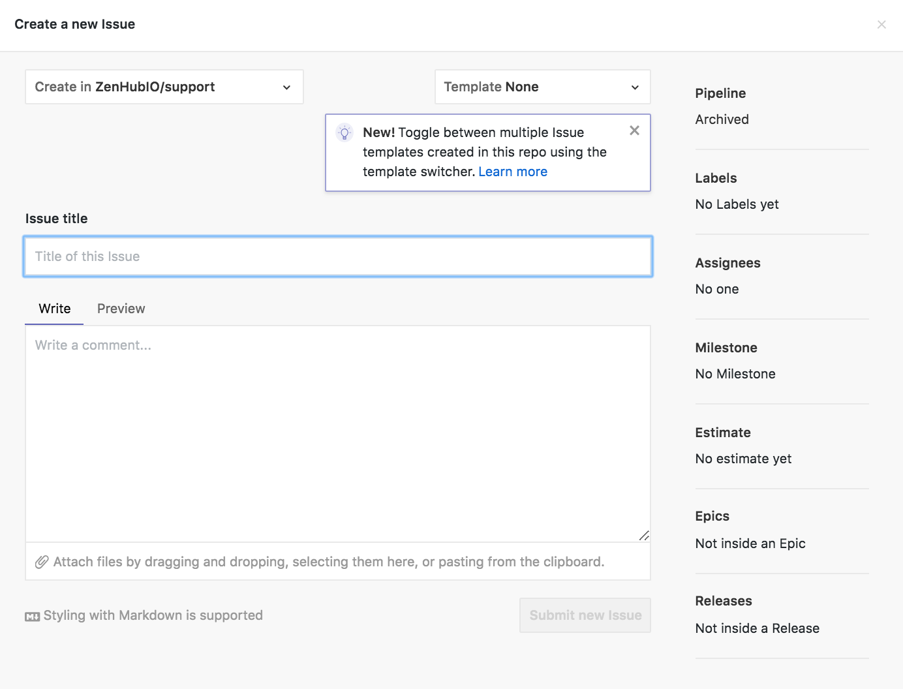<br>
    Issueの作成
  </figure>
  <br>
  <p><b>2. 一定のマイルストーンが定義できること。</b><br>
  マイルストーンを定義するとは、スクラムで言えば『スプリント』が作成できることです。
  ZenHubでは『Milestone』機能が提供されているため一定期間のタイムボックスを選択してスプリントが作成できます。<br></p>
  <figure>
    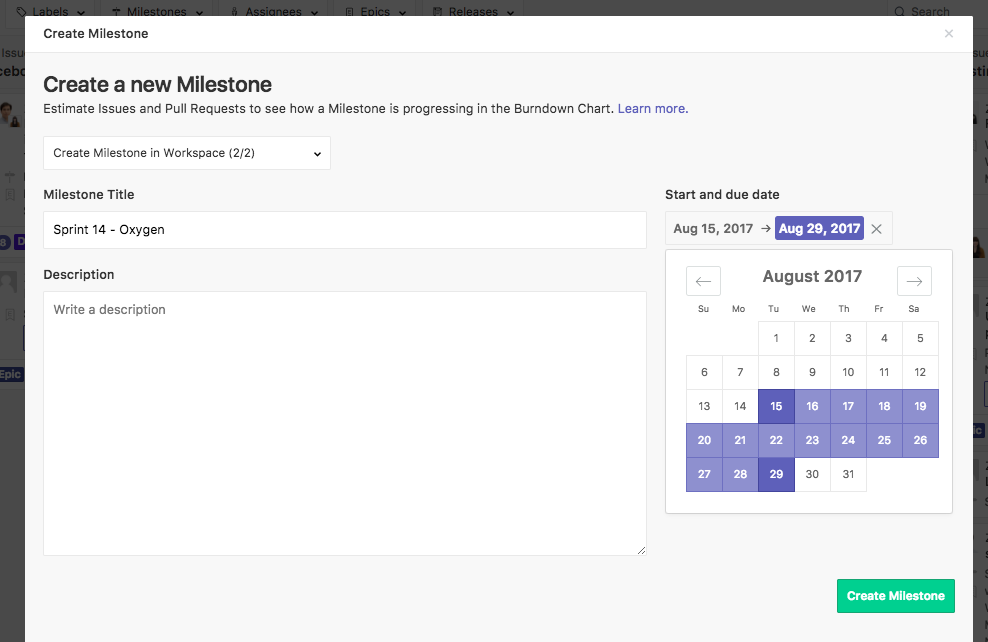<br>
    マイルストーンの詳細（出典： <a href="https://help.zenhub.com/support/solutions/articles/43000010361">Create GitHub Milestones across a multi-repo Board : Help Center</a>)
  </figure>
  <br>
  <p><b>3. ユーザーストーリーが作成でき、それに紐づくアイテムが可視化できること。</b><br>
  アジャイルでは、ユーザーストーリーをベースにひとつのストーリーが完了するまでに必要なアイテムを紐づけられるべきです。 一般的にこのような仕組みは『Epic』という機能で補完されます。もちろんZenHubにも『Epic』機能があります。<br>
  Epic機能は、一言でいうとGitHub Issueをひとつの枠組みでまとめられることができます。<br>
  IssueとEpicを紐付けることによって、そのユーザーストーリーが完了するまでに必要なアイテムが可視化されます。<br></p>
  <figure>
    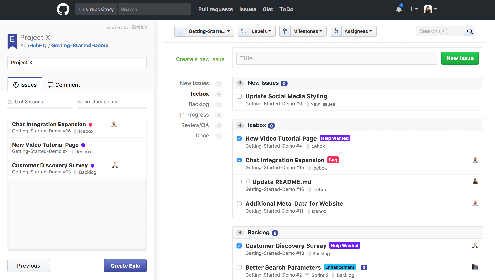<br>
    Epicの作成（出典：<a href="https://help.zenhub.com/support/solutions/articles/43000010341">Using Epics in ZenHub for projects and user stories : Help Center</a>)
  </figure>
  <br>
  <p><b>4. リリース計画が立てられること。</b><br>
  アジャイルでは、より高速にリリースサイクルを回、し顧客からのフィードバックをもらうことを重要視しているためリリース計画を可視化する必要があります<br>
  ZenHubでも便利な『Release Reports』機能があります。
  リリースまでに必要な、アイテムのストーリーポイントをもとに以下を可視化できます<br>
  <ul>
    <li>リリース期限までの現時点でのストーリーポイント消化速度<br></li>
    <li>リリース期限までの期間内でリリースできるために必要な理想的なストーリーポイント消化速度<br></li>
  </ul>
  </p>
  <figure>
    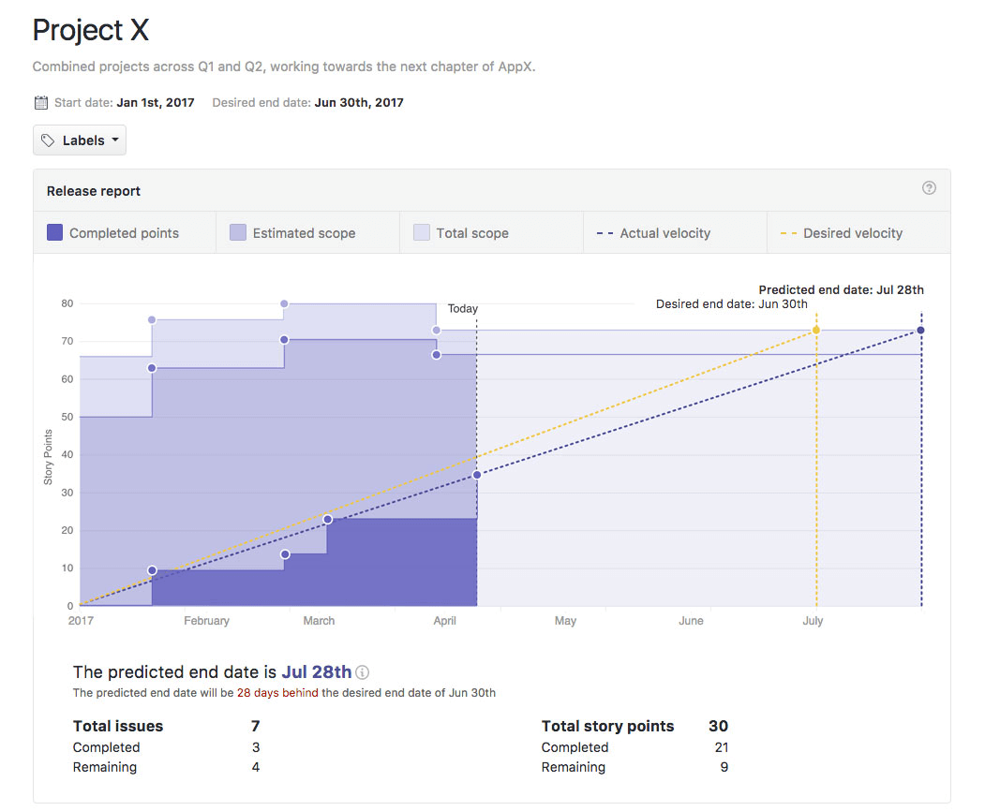<br>
    Release Reports機能（出典：<a href="https://help.zenhub.com/support/solutions/articles/43000010359-plan-long-term-projects-with-release-reports">Plan long-term projects with Release reports</a>)
  </figure>
  <br>
  <p><b>5. レポート によるチームへのフィードバックができること。</b><br>
  スプリントの経過や成果について、バーンダウンチャートおよびベロシティートラッキングを利用しますが、ZenHubにもしっかりと備わっています。</p>
  <p><b>バーンダウンチャート</b><br>
  Milestoneで定義したスプリントにおける消化ストーリーポイントの推移<br>
  <figure>
    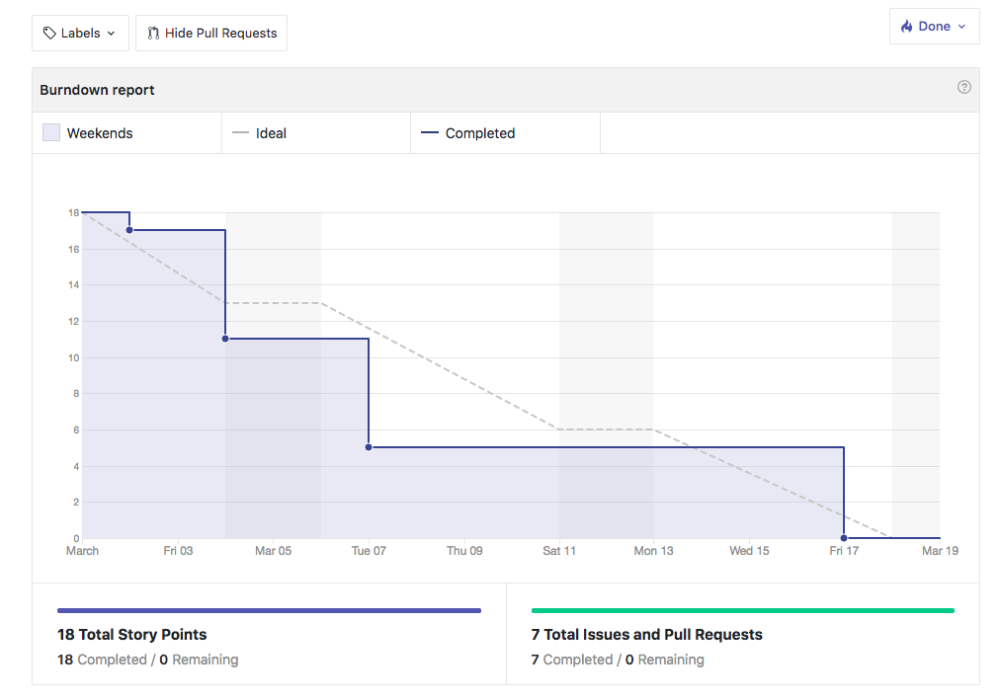<br>
    バーンダウンチャート（出典：<a href="https://help.zenhub.com/support/solutions/articles/43000010356">Creating Burndown charts in ZenHub using GitHub Milestones : Help Center</a>)
  </figure>

  <p><b>ベロシティートラッキング</b><br>
  マイルストーンで定義したスプリントにおける消化ストーリーポイントの数を表します。<br>
  <figure>
    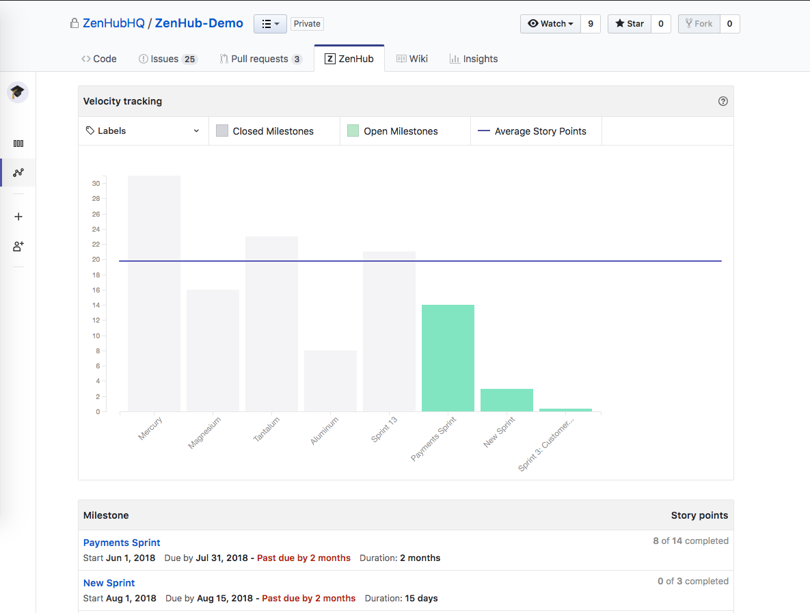<br>
    ベロシティートラッキング（出展 : <a href="https://help.zenhub.com/support/solutions/articles/43000010358">Using Velocity charts in ZenHub : Help Center</a>)
  </figure>
<br>

<h2 id="development-process">ZenHubを活用した開発プロセス最適化の例</h2>
  <p>続いて、ZenHubを利用してチームの中でどう開発していくかを一例をもとに記載していきます。<br></p>
  <p><b>全体図</b></p>
  <figure>
    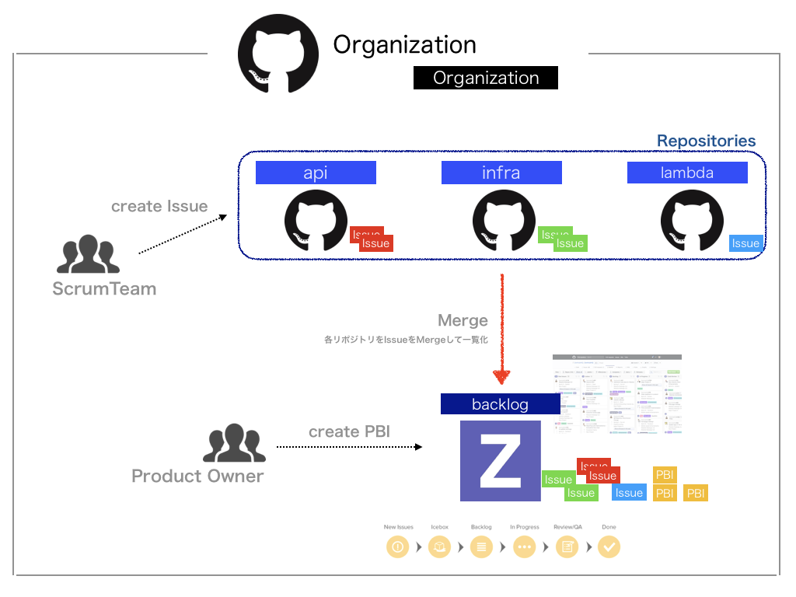<br>
    開発プロセスの全体図
  </figure>
  <p><b>プロセス</b></p>
  <ol>
    <li>Organizationの中で基本操作しています。</li>
    <li>Product Backlog Itemの可視化のため、専用の『backlog』というGitHubリポジトリを用意して、その中にZenHubのBoradを用意します。</li>
    <li>PO(ProductOwner)は、普段どおり『backlog』に対してProduct Backlogを作っていきます。</li>
    <li>ScrumTeamのDeveloperは、対象リポジトリ(ex.api, infra, lambda)に対してバグや改善ポイントをIssueとして発行していきます。</li>
    <li>ZenHubのBoardには、Organizationと紐づくリポジトリのIssueをMergeする機能があります。『backlog』のBoardに指定したリポジトリのIssueがすべて可視化できるようにします。</li>
  </ol>
  <p>メリットとしては、GitHubリポジトリに起因してIssueを発行することで、そのIssueはどこに対してコミットすれば良いのかがまずわかります。
  また、『backlog』のような専用のBoardを用意して、それぞれのリポジトリに発行されたIssueを集約することで、一元管理できるのも大きなメリットです。</p>
<br>
<h2 id="product-development-pipelines">スクラムとの親和性を考えたパイプラインの例</h2>
  <p>作業を可視化するためのパイプラインについてです。
  ZenHubではデフォルトのレーンを提供しています。<br>
  <figure>
    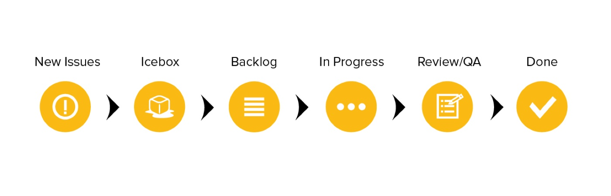<br>
    プロダクト開発のパイプライン（出典：<a href="https://www.zenhub.com/blog/how-the-zenhub-team-uses-zenhub-boards-on-github/">How the ZenHub team uses kanban boards in GitHub – For beginners</a>)
  </figure></p>

  <p>もちろんそのまま利用する形でも良いのですが、私たちのチームではスクラムに合ったカスタマイズしています。そのカスタマイズ例を紹介します★。<br>
    <figure>
      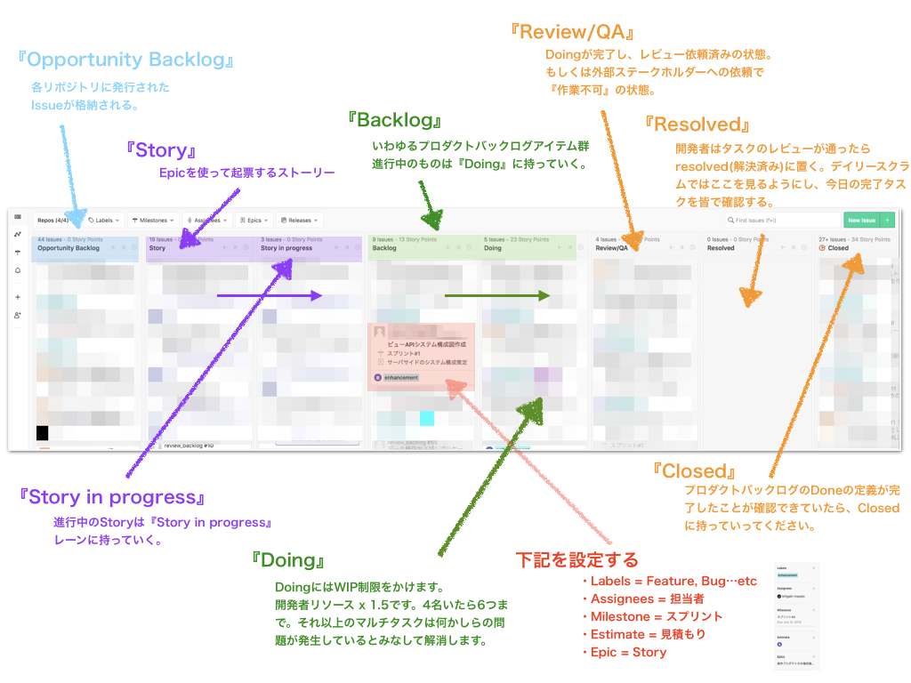<br>
      カスタマイズしたパイプライン
    </figure></p>
  <ol>
    <li>Opportunity Backlog : 各リポジトリに発行されたIssueがここに積まれていきます。</li>
    <li>Story : Epicを利用してユーザーストーリーに沿ったものが積まれていきます。</li>
    <li>Story in progress: 『Story』のレーンのなかで現在進行中のものをここに配置して、どのStoryに着手しているのかを可視化します。</li>
    <li>Backlog : オポチュニティバックログ（Opportunity Backlog）から精査されたプロダクトバックログをここに積んでいきます。 </li>
    <li>Doing: 現在進行中のスプリントバックログアイテム（Sprint Backlog Item）です。 </li>
    <li>Review/QA: レビューや問い合わせ待ちのものを配置します。</li>
    <li>Resolved: 完了したスプリントバックログアイテムについて、一度ここのレーンに持っていき、デイリースクラムで皆で確認後にCloseのレーンに持っていきます。 </li>
    <li>Closed : 完了したスプリントバックログアイテムです。</li>
  </ol>
  <p>補足
  アイテムには、Milestone, Epic, Labelsを必ず紐づけます。そして、Estimate, Assigneesはスプリントプランニングの際に紐づけます。</p>

<h2 id="reports-">Reports機能による遅延プロセスの特定方法</h2>
  <p>ZenHubを利用する目的の一つとして、Reports機能の充実性によるプロセスの分析のしやすさがあります。<br>
  <figure>
    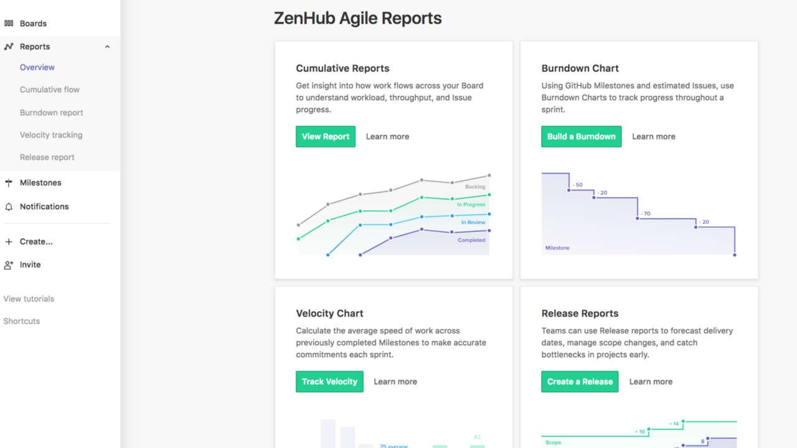<br>
    Reports機能
  </figure></p>
  <p>さまざまな分析方法がありますが、チームの遅延プロセスの特定という観点で以下2つを紹介します。<br></p>
  <ul>
    <li>Cumulative Flow Diagrams</li>
    <li>Labels in Velocity tracking</li>
  </ul>

  <h4 id="cumulative-flow-diagrams-br-">Cumulative Flow Diagrams<br></h4>
    <p>Cumulative Flow Diagramsとは、パイプラインの各レーンが時間とともにどのように変化しているかを見ることができます。<br></p>
    <figure>
      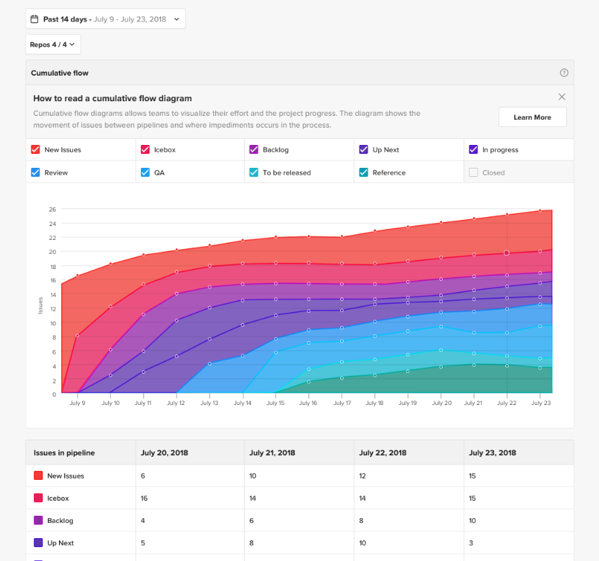<br>
      Cumulative Flow Diagrams（出典：<a href="https://www.zenhub.com/blog/introducing-cumulative-flow-diagrams-in-zenhub/">Introducing Cumulative Flow Diagrams in ZenHub!</a>)
    </figure>

    <p><b>プロセスのボトルネック特定</b><br>
    ひとつの効果としてはZenHubのパイプラインの中において、どのプロセスがリードタイムがかかっているか、ボトルネックになっているかを可視化できます。</p>
    <p>私のチームの例を出します。上で紹介したカスタマイズしたパイプラインにおけるCumulative Flow Diagramsを見ていきましょう。<br>
    <figure>
      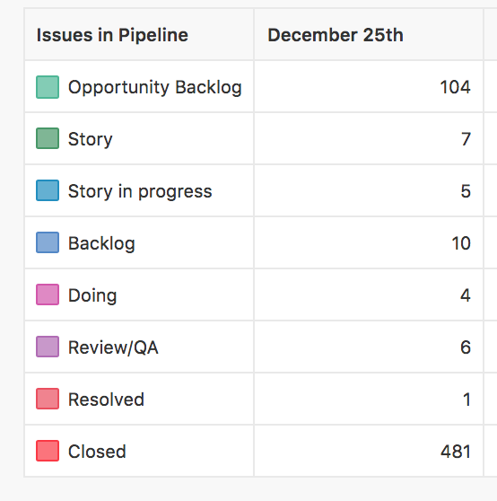<br>
      パイプラインレーンにおけるアイテム数の例
    </figure>
    <p>概ね良さそうな感じはしますが1点気になる点があります。</p>
    <p>それは、『Doing』『Review/QA』の部分です。用語の意味ですが、Doingは進行中のアイテム（スプリントバックログアイテム）でReview/QAはレビュー中といった形です。</p>
    <ul>
      <li>Doing = 4</li>
      <li>Review/QA = 6<br></li>
    </ul>
    <p>となっており、Review/QA、つまりレビュー中のものが溜まっていることがわかります。<br>
    実際には、Doingのアイテムの開発自体は終わっている状態で、チームメンバーのレビュー時間が遅延していることでClosedせずにレーン上に残ってしまうとスプリントの終わりにバーンダウンせずにベロシティーに反映されません。</p>
    <p>つまり、このチームがベロシティーが安定しないという問題を抱えているならばここを見れば、単に開発力が追いついていないのではなく、Review/QAのパイプラインで溜まっているだけだということがわかります。</p>
    <p>これを解消するには、皆でレビューする時間を決めたりそもそもパイプラインを見直すことも良いでしょう。</p>
    <p>また、チーム内でDoingのWIP制限を設けている場合、つまりどのくらいマルチタスクで作業していいかについても、Doingの部分の数値がどのくらいになっているかでオーバーしているのかどうかが可視化できます。</p>

  <h4 id="labels-in-velocity-tracking-br-">Labels in Velocity tracking<br></h4>
    <p>Velocity trackingにおけるLabelsのフィルター機能における分析方法について記載していきます。<br>
    LabelsとはIssueに対して種別をつけることができる機能です。デフォルトで用意させているLabelsは以下です。<br>
    <figure>
      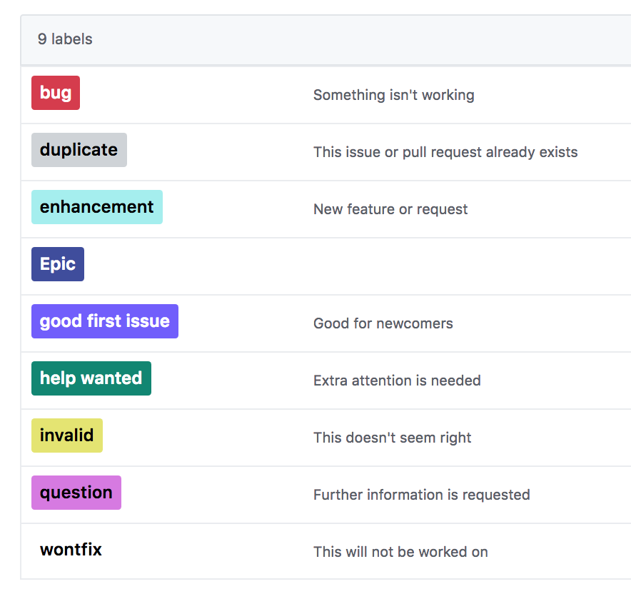<br>
      デフォルトのLabels
    </figure>
    <p>そもそも、なぜLabelsをつけるのでしょうか？意味としては2つあると思っています。<br></p>
    <ol>
      <li>開発者側から見た作業の明確化。Issueの立ち位置を可視化する</li>
      <li>開発プロセスの分析におけるチーム傾向とプロセスボトルネック特定</li>
    </ol>
    <p>1の作業の可視化はイメージしやすい通り、IssueのAuthorsおよびAssigneesにとって、そのIssueがどのような種別で、どのような意味を持っているのかを示します</p>
    <p>『開発プロセスの分析におけるチーム傾向とプロセスボトルネック特定』
    です。</p>
    <p>簡単な分析手法としては、そのスプリント内で消化したIssueの中で、どのLabelsに紐付いたIssueが、どのくらいの割合を締めているかが直感的に見ることができます。<br>
      下図の例でいけば、Sprint12のベロシティーは『18』で、その中で『bug』のLabelsが紐付いたIssueがほとんどを締めているなど、Labelsの追跡を追加することでチームの傾向を特定できます。
    </p>
    <figure>
      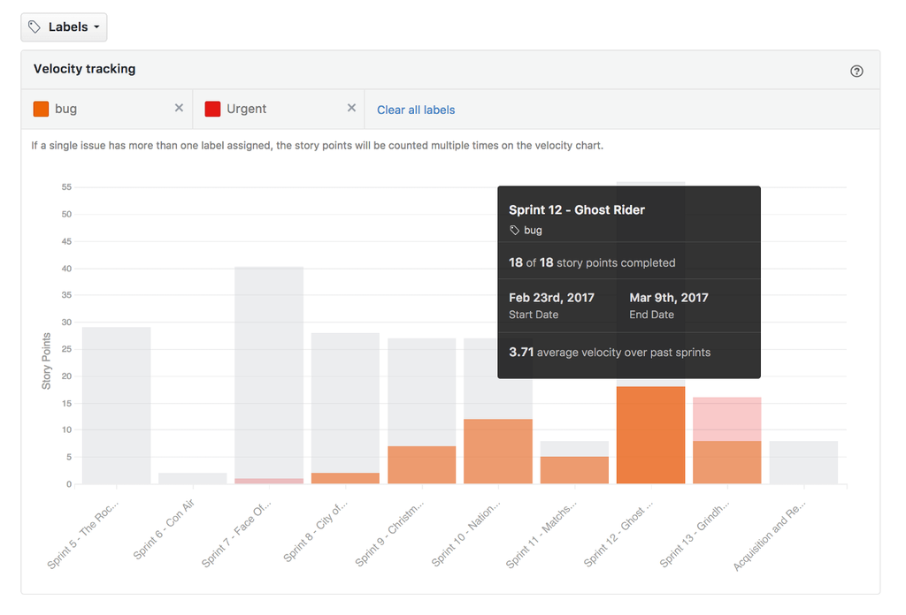<br>
      ベロシティートラッキング（出典：<a href="https://help.zenhub.com/support/solutions/articles/43000010358-track-team-velocity-sprint-over-sprint">Track team Velocity sprint-over-sprint</a>)
    </figure>
    <p>例えばチームとして、プロジェクトの最中にもかかわらず新規開発(enhantment)が全然見積もりどおりに進まないということがわかった際に、ベロシティートラッキングから『bug』や『ops』(運用・定常業務)のLabelsの割合が多いことが可視化されれば改善の第一歩目が踏み込めます。<br></p>
    <p>まずは、このようなReports機能を使ってプロセスの可視化を第一優先で進めてボトルネックを特定してから改善を言う流れが良いと思います。</p>

<h2 id="conclusion">まとめ</h2>
  <p>今回は『ZenHub x GitHub』を軸としたアジャイルプロセスの作り方と題して、アジャイルとの親和性やアジャイルプロセスを作っていくにあたってのZenHubの基本機能や開発プロセスを説明させていただきました。
  特にプロジェクトで、GitHubを利用している方にはZenHubはおすすめです。
ぜひ、ZenHubを使ってのプロセス設計をして見てください！</p>

<h2 id="document">参考資料</h2>
<ul>
  <li><a href="https://help.zenhub.com/support/solutions/articles/43000010778-what-is-zenhub-an-intro-to-zenhub-in-github">What is ZenHub？</a></li>
  <li><a href="http://agilemanifesto.org/iso/ja/manifesto.html:title">アジャイルソフトウェア開発宣言</a></li>
  <li><a href="https://help.zenhub.com/support/solutions/articles/43000010361">Create GitHub Milestones across a multi-repo Board : Help Center</a></li>
  <li><a href="https://help.zenhub.com/support/solutions/articles/43000010341">Using Epics in ZenHub for projects and user stories : Help Center</a></li>
  <li><a href="https://help.zenhub.com/support/solutions/articles/43000010359-plan-long-term-projects-with-release-reports">Plan long-term projects with Release reports</a></li>
  <li><a href="https://help.zenhub.com/support/solutions/articles/43000010356">Creating Burndown charts in ZenHub using GitHub Milestones : Help Center</a></li>
  <li><a href="https://help.zenhub.com/support/solutions/articles/43000010358">Using Velocity charts in ZenHub : Help Center</a></li>
  <li><a href="https://www.zenhub.com/blog/how-the-zenhub-team-uses-zenhub-boards-on-github/">How the ZenHub team uses kanban boards in GitHub – For beginners</a></li>
  <li><a href="https://www.zenhub.com/blog/introducing-cumulative-flow-diagrams-in-zenhub/">Introducing Cumulative Flow Diagrams in ZenHub!</a></li>
  <li><a href="https://help.zenhub.com/support/solutions/articles/43000010358-track-team-velocity-sprint-over-sprint">Track team Velocity sprint-over-sprint</a></li>
</ul>
</body>
